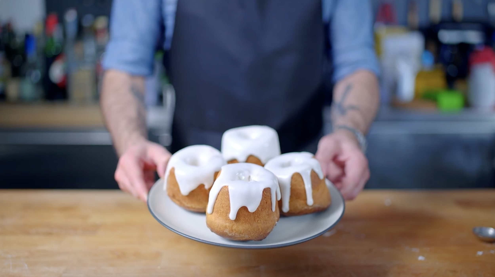

Skyrim Sweetroll

The Sweet Roll is a pastry-like treat found in multiple locations within
Skyrim. They consist of a light brown sweetbread as the lower part, with
icing covering the top.
Ingredients:
- 3 Tbsp butter, melted
- 1 cup whole milk, warm
- 2 Tbsp honey
- 2 tsp active dry yeast
- 1 large egg
- Kosher salt
- 2 cups all-purpose flour
- 200 grams confectioner's sugar
- 45 grams low fat milk
-
Into a large mixing bowl combine 3 tablespoons of melted butter, 1 cup
of warm whole milk, 2 tablespoons of honey, 2 teaspoons of active dry
yeast, and 1 large egg then whisk together with a pinch of salt.
-
Add together with 2 cups of all-purpose flour and mix together until a
smooth batter is formed.
-
Generously butter the tube cans and spoon the batter inside. Make sure
to wipe up any sticky excess. Cover with plastic wrap and rest at room
temperature for 30 minutes during which the batter should expand double.
-
Remove the plastic wrap and place the cakes onto a rimmed baking sheet
and place into a preheated 350°F oven for 15 minutes or until lightly
brown and a toothpick inserted in the center comes out clean.
-
After letting the cakes cool in the pan for about 5 minutes, remove the
cakes from the tube cans and let them completely cool on a wire rack.
-
In which time the frosting can be made by mixing together 200 grams of
confectioner's sugar with 45 grams of low-fat milk and whisking together
until smooth.
-
At which point, generously spoon the frosting on top of the cake and
enjoy it.
Recipe by Binging with Babish (Elder Scrolls Cookbook Method). Check out
the video tutorial on how to make Skyrim Sweetrolls
here.